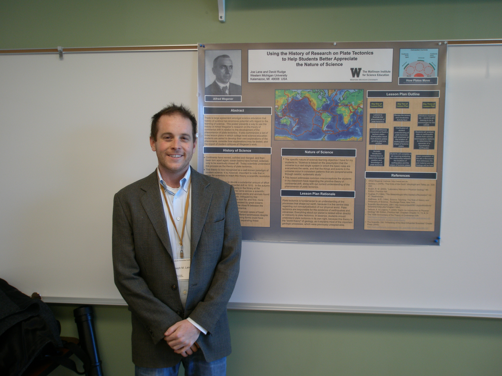

Joseph M. Lane and David W. Rudge The Mallinson Institute for Science Education
|
|
| Abstract: This poster will provide the reader with a detailed lesson plan that is designed to use history to explain the development of the phenomenon of plate tectonics. It is the primary purpose of this lesson plan to inform students of the importance of scientific advancements and to illustrate the benefits of using history to support a better understanding of the nature of science. This lesson plan illustrates that German scientist Alfred Wegener proposed that throughout most of geologic time there was only one continental mass, and one ocean. To strengthen his argument, Wegener drew perspectives from numerous scientific fields, as well as past works from specific scientists. Designed as an educational instrument for science education research, this lesson plan will permit students to examine how science and scientists actually work. In addition, students will gain a better understanding of the physical processes that our planet has undergone over, long, geologic periods of time. Students are presented with a scientific benchmark from the AAAS Project 2061, stressing the importance that: "science is in fact one vast single system, in which everything in the universe occurs in consistent patterns that are comprehensible through careful, systematic study." The argument within this poster includes information on the need to explore the work of scientists by using history. In addition, the crucial characteristics that scientists must obtain when investigating our natural world is exemplified. | |
| PUBLICATIONS | |
| 2013 | Lane, J.M. & Rudge, D.W. Using the History of Research in Plate Techtonics to Help Students Better Appreciate the Nature of Science. Pp. 87-98. In Heering, P, Klassen, S., Metz, D. (eds.) Enabling Scientific Understanding Through Historical Instruments and Experiments in Formal and Non-Formal Learning Environments, Flensburg University Press: Flensburg, Germany. |
| PRESENTATIONS | |
| Lane, J.M. & Rudge, D.W. "Using the History of Research in Plate Techtonics to Help Students Better Appreciate the Nature of Science." Twelfth Biennial Meeting of the International History, Philosophy & Science Teaching Group (IHPST), University of Pittsburgh, Pittsburgh, PA, 20 Jun 2013 - poster | |
| Lane, J.M. & Rudge, D.W. "Using the History of Research in Plate Techtonics to Help Students Better Appreciate the Nature of Science." Second Annual Graduate Humanities Conference, Western Michigan University, Kalamazoo, MI, 22 Mar 2013 - poster | |
| Lane, J.M. & Rudge, D.W. "Using the History of Research on Plate Tectonics to Help Students Better Appreciate the Nature of Science." Ninth International Conference for the History of Science in Science Education: Enabling Scientific Understanding through Historical Instruments and Experiments in Formal and Non-Formal Learning Environments, Flensburg University, Flensburg, Germany on July 31, 2012. -poster | |
Last updated on 30 Aug 2013.